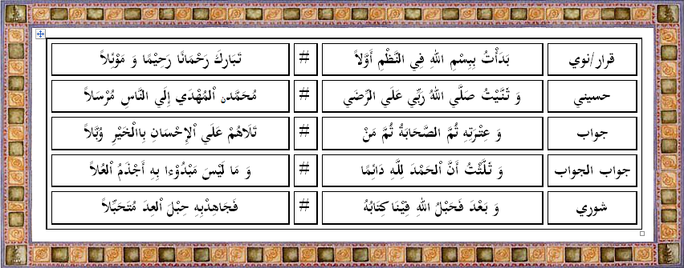
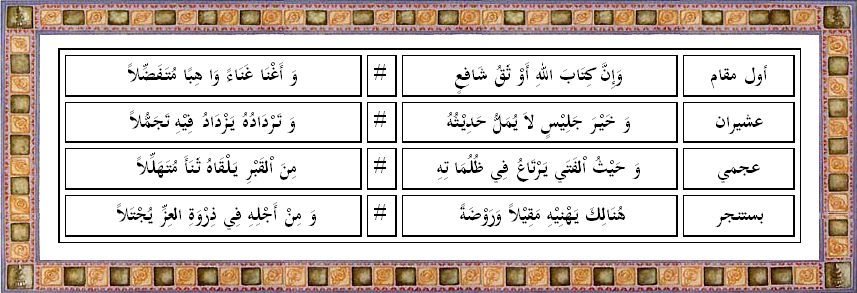
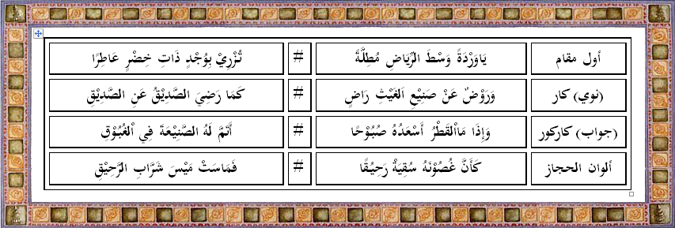
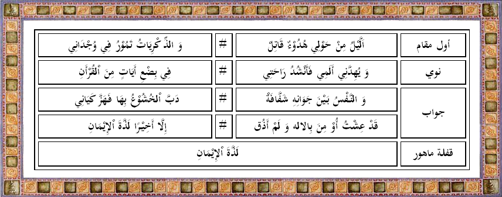
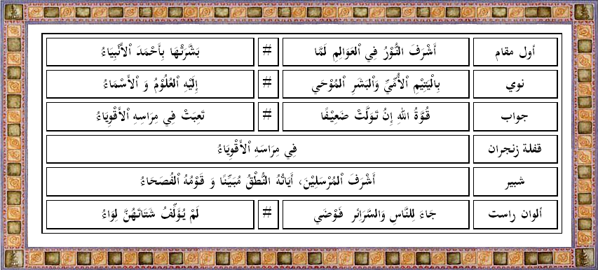
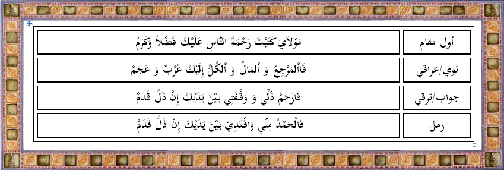
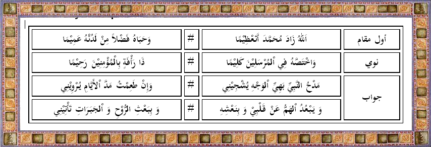

Bayati
Dalam tradisi melagukan Al-Quran menempatkan lagham/maqom bayyati sebagai lagu pertama. Adapun Lagu maqom Bayyati memiliki 4 tingkatan nada yaitu:
- Qoro (Dasar)
- Nawa (Menengah))
- Jawab (Tinggi)
- Jawabul Jawab (Tertinggi)
Contoh praktek dari lagam Bayyati: 
Shoba
Maqom/lagham Shoba memiliki 4 tingkatan/variasi nada:
- Awal Maqom Shoba
- Asyiron (nawa)
- Ajami (jawab)
- Quflah Bustanjar
Contoh Praktek dari lagam Shoba: 
Hijaz
Tingkatan/variasi nada pada Maqom/lagham Hijaz:
- Awal Maqom
- Hijaz Kar
- Hijaz Karkur
- Alwan Hijaz
Contoh Praktek dari lagam Hijaz: 
Nahawan
Tingkatan/variasi nada pada Maqom/lagham Nahawan:
- Awal Maqom Nahawan
- Nawa
- Jawab
- Quflah Mahur
Contoh Praktek dari lagam Nahawan: 
Rost
Tingkatan/variasi nada pada Maqom/lagham Rost:
- Awal Maqom Rost
- Nawa
- Jawab
- Quflah Zinjiron
- Syabir Alarrost
- Alwan Alarrost
Contoh Praktek dari lagam Rost: 
Sika
Tingkatan/variasi nada pada Maqom/lagham Sika:
- Awal Maqom Sika
- Iraqi (Nawa)
- Turki (Jawab)
- Variasi Raml
Contoh Praktek dari lagam Sika: 
Jiharka
Tingkatan/variasi nada pada Maqom/lagham Jiharka:
- Awal Maqom Jiharka
- Nawa
- Jawab
Contoh Praktek dari lagam Jiharka: 